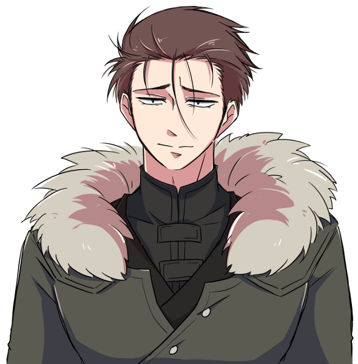
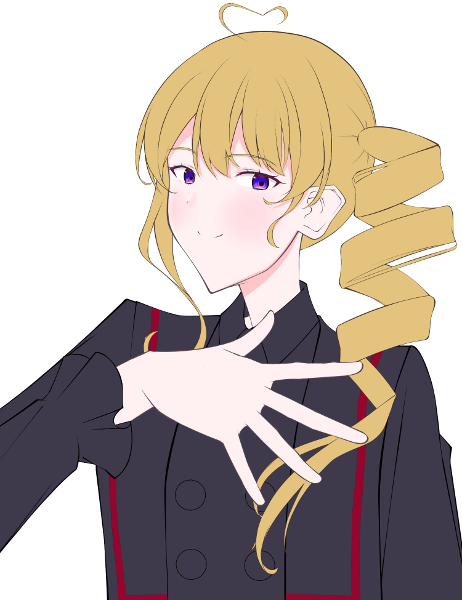
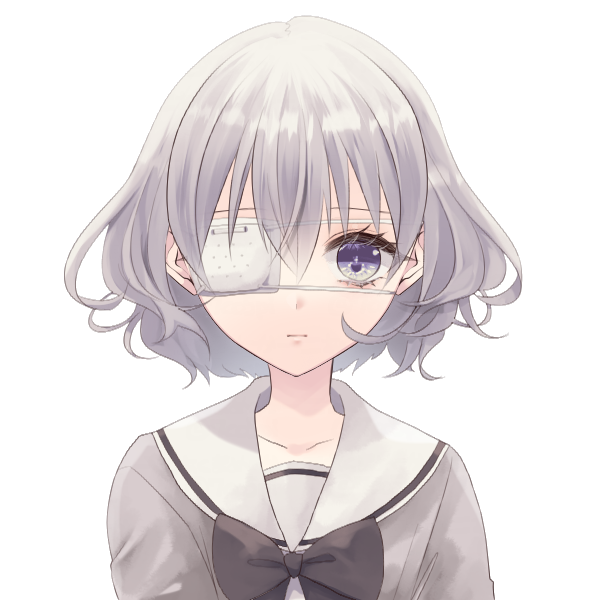

メインログ / 雑談ログ
キャラシート
父親： 巨肩矢委人 (キャラシート) PL：がぶらす母親： フランベルジュ (キャラシート) PL：雅
長男： ヴォルグ (キャラシート) PL：灸
長女： クリスタ=フォン=グラスマン (キャラシート) PL：ふろずん
次女： 雲峰詩音 (キャラシート) PL：めい
目次
■プリプレイHO&PC紹介
■オープニングフェイズ
01 本物の偽物
プリプレイ
■共通ハンドアウト
ワークス / カヴァー:自由 / 自由
ロイス:"パパラッチ"
推奨感情:P 自由 /N 自由
諜報専門の FH エージェント、通称 ” パパラッチ ”を UGN が取り逃がしたのが数週間前の話。
彼が逃げたと思われる薄雲市に潜入し”パパラッチ ” を見つける為、キミ達は敵にバレぬように家族を装って引っ越す事になる。
GM : では、始めに自己紹介から！まずお父さんどうぞ
巨肩 矢委人 : はーい！簡潔にということなのでできるだけ簡潔に

巨肩 矢委人 :
名前は巨肩矢委人(おおかたやすと)、年齢は17！
見た目は大人で中身は少年…だけど大人びてはいる子
よくチルドレンの教官と間違われるよ
でもやっぱり子供ではあるから、色々拙いところはある
カバーしてあげてほしいなって
巨肩 矢委人 :
ビルドについて
クライマックスに万色の檻で大殴りする殴りオルクス！
妖精の手もあるぜ
途中で武器が一個買えると嬉しいです
巨肩 矢委人 : 【ゆとシート】、【キャラクター登録所】
GM : 老けてるけど若いお父さん…調達についてはあとで1つ注意点がありますが全然できると思う！
GM : じゃあ次はお母さんどうぞ～
フランベルジュ : はーい！自分は更に簡潔に
フランベルジュ :
名はフランベルジュ、性は捨てた！
年齢は数百歳！Dロイス『古代種』の力でずっと幼い外見のまま生きてきました。一応UGN側で働いてるらしい。
フランベルジュ : 言動も幼いけど、どこか外見と不相応で物騒なことを口走ったりします。怖いね。
フランベルジュ :
そして現在はラウレスアレアという場所でお偉いさんやってます！詳しくはここを見てね！
https://lisp-trpg.sakura.ne.jp/upload/upl/_Mf7jA8rjFGw2SZWxZ7g/00499.html
フランベルジュ : シンドロームはピュアのソラリス。薬物の力で敵の精神を蝕み、デバフをかけるぞ！
フランベルジュ : 「そんなお母さんだよ！よろしくね！」
フランベルジュ : 【キャラクターシート】
GM : ありがとう！逆に見た目若いけど古代種でもうこの時点で雰囲気が危うい…
GM : 次は長男さん！
ヴォルグ : はーい

ヴォルグ :
名前はヴォルグ、年齢は32歳
雪女伝説のレネゲイドビーイングです！
元はFH寄りの情報屋、今は色々あってUGNに所属しています。
ヴォルグ : ぼんやりしているように見えて自分の損得で動き、好きな事をして好きな物を食べて生きてる。人生(?)楽しければなんでもよし！なタイプ
ヴォルグ :
シンドロームは氷特化のサラマンダーとブラム＝ストーカー
わざと攻撃を受けてカウンターをとったり自らの体力を削って戦うゾンビアタッカータイプです！
ヴォルグ : 【キャラクターシート】
GM : お兄ちゃん(32歳)おるね…お父さんがしっかりしてるけど未成年やから支えてあげてほしい…紹介ありがとう！
GM : じゃあ今度は長女さん！
クリスタ : よくってよ！
クリスタ : クリスタ=フォン=グラスマン！ 齢は15！
クリスタ : ドイツ出身の高校1年生の御嬢様ですわ！
クリスタ : 自身が貴族である事に誇りを持っていて、いつも自分磨きに余念がない女性ですの！
クリスタ : 特に"美"に関する意識の高さについては、トップモデルのソレと肩を並べるレベル！
クリスタ : それはそれはイロイロなコトを我慢して"美の頂点"への階段を昇っているのですッ！
クリスタ : ……そうした"努力"を続けてきた影響で、プライドの高いレディになっていますの！
クリスタ : また自他共に厳しいので孤高な人ですが、今回は疑似家族ができるということで！！ どういう関係になるのか愉しみですわ！！
クリスタ :
戦闘では「Dロイス：秘密兵器」等で取得したEXレネゲイド※を駆使して戦います！
※レネゲイドに感染した物品
クリスタ : RC技能で≪インビジブルハンド≫による範囲攻撃を行なう他、装甲諸々のおかげで合計43点のダメージ軽減ができますの！
クリスタ : 自分の身体は守って当然よね、だって手入れした肌が傷付くなんて許せないもの！！
クリスタ : ……そんなところですわ！
クリスタ : 【キャラクターシート】
GM : ああ、お嬢様！ご紹介ありがとうございます、一般家庭生活でのお嬢様の奮闘に期待していますわ…！
GM : 最後になりました、次女ちゃんどうぞ！
雲峰詩音 : はい！
雲峰詩音 : 雲峰詩音（くもみねしおん）、16歳のUGNチルドレンです。
雲峰詩音 : ≪急速分解≫で触れたものを灰に出来るけど、その代わりに常に周りが灰塗れになるところから、コードネームはシンデレラになりました。
雲峰詩音 : 対抗種のDロイスを持っているキャラで、オーヴァードは触れた箇所が火傷するような痛みを伴って灰化します。
雲峰詩音 : フレーバー設定だからHPダメージは無いけど、PCにも影響あるのでこのキャラに触る時には覚えといてもらえたらなって思います。一応服の上の部分ならギリ大丈夫です。
雲峰詩音 : 性格としては心に壁を作っていてあまり人と深く関わろうとしない暗い奴です。与えられた任務を成功させることだけ考えて生きてます。
雲峰詩音 : ビルドはモルフェウス/バロールのRC型で、≪砂の刃≫で灰を操って戦います。
雲峰詩音 : あとは≪孤独の魔眼≫で範囲攻撃の対象を自分一人に変更したり、≪時の棺≫で判定失敗にさせたりも出来ます。
雲峰詩音 : 以上で！
雲峰詩音 : 【キャラクターシート】
GM : 悲しい設定しとる…この卓通して人とちょっとずつでも触れ合っていってほしいね
GM : ではでは、今回はこの5人でやっていこうと思います。DX3rd『オーヴァード家族物語』始めていきます！
メインプレイ
シーン1 本物の偽物
GM : オープニングは全員登場です！
巨肩 矢委人 : 1d10＋29(1D10+29) ＞ 4[4]+29 ＞ 33
フランベルジュ : 1d10＋32(1D10+32) ＞ 7[7]+32 ＞ 39
ヴォルグ : 1d10+40(1D10+40) ＞ 7[7]+40 ＞ 47
クリスタ : 1d10+45 侵蝕率初期値でも一番ですわ～～～～(1D10+45) ＞ 10[10]+45 ＞ 55
雲峰詩音 : 1d10+33(1D10+33) ＞ 1[1]+33 ＞ 34
UGN支部 会議室
GM : とある夏の暑い日、君たちは本部エージェントである本分 英二(ほんぶ えいじ)に呼ばれ、UGN支部の会議室へと呼び出されていた。
GM : だが、君たちは任務のため呼び出しを受けたというだけでまだその内容は知らされておらず、その場には本分英二の影の形もない。
クリスタ : 「(……時間には可能な限りのヨユウをもって来たけれど、呼び出し人の姿はなし)」
クリスタ : 「(代わりに待ちあわせ場所にいたのは、矢鱈と背の高い男が一人、と)」
クリスタ : 「(……このワタクシをよびだしておいて失礼)」
クリスタ : 「(というか！ こんな背の高い日本人いますの！？ ソファが小さく見えますわよ！？)」優雅に紅茶を啜りながら、目の前の巨漢を観察する
ヴォルグ : クリスタの視線を感じつつ紅茶を飲んでいる、声を掛けようかとも思ったが今は他の面子を待った方がいいだろうと判断し、素知らぬフリをしている様子
ヴォルグ :
「（待たされるのは慣れてるが…気まずいな。）」
そっ…と視線を合わせないようにしながら
巨肩 矢委人 : ふと、規則正しいノックの音がする
クリスタ : 「……？ 本分様の御到着かしら？」チラ、と扉に目をやる
ヴォルグ : 心なしかホッとした様子で扉を見る
巨肩 矢委人 :
「失礼致します」
身長にして約180cmという長身のスーツの男が入って来る
クリスタ : ガシャン、とそこそこ大きな音を立ててティーカップを置く
クリスタ : 「(また巨体のオジサマ！？！？)」
ヴォルグ :
「！」
僅かに目を丸くして大きな音を立てたティーカップとクリスタを交互に見る
巨肩 矢委人 : 「！？…ええと、どうかしましたか？」
クリスタ : 「……いえ、なんでも」平静を装う
クリスタ : 「あなたは……本分様から言伝でも預かってきたのかしら……？」呼びだされたのは自分だけだと思っているので、遣いのエージェントだと勘違いしている
巨肩 矢委人 : 「？ ええと、失礼致しました。UGNチルドレン、"オーリーオーン"巨肩矢委人、到着致しました。自分は本部からの伝言は託かってはいませんが…」
クリスタ : 「UGNチルドレン？」
クリスタ : 「(……ああ、いえ、聞き間違いよね、聞き間違いだわ)」
クリスタ : 「それでは、あなたはどうして此処に？」
巨肩 矢委人 : 「はい、自分はエージェント・本分に召集を受けました」
クリスタ : 「……あなたも、本分様から召集を？」
クリスタ : 「では、あなたも？」ヴォルグ君に視線を移し
ヴォルグ : 「俺もエージェント・本分から召集を受けた。人数以外の内容は聞いていないがな…」
クリスタ : 「…………」
クリスタ : クリスタはごくごくごくと紅茶を一気に飲み干して、叩きつけるようにカップを置きます。
クリスタ : 「(どういう人選なの！？！？！？！？)」
クリスタ : 「(この麗しいワタクシと、あの巨漢二人がバディってコト！？！？！？！？！？)」
巨肩 矢委人 :
「(何か言いそうだけど何も言わないな…)」
固唾を呑んで見守っている
ヴォルグ :
「…ということはあと２人だな。」
落ち着きのない様子を暫く眺め、軽く咳払いをして漸く口を開いたかと思えば手帳を確認しながら呟く
クリスタ : 「あと二人！？ まだいるの！？」思わず声を出す。 巨漢が更に二人まとめて出てくる様子をイメージしているらしい。
巨肩 矢委人 : 「…？人数は私含めて5名という連絡は受けていたような…詳細は伝達されていませんが…」
クリスタ : 「……ワタクシのところに、そのような連絡はありませんでしたわ」
巨肩 矢委人 :
「んん…！何か考えが…」
苦しいフォロー
ヴォルグ :
「（伝達ミスか…？）」
手帳の伝達内容にも軽く不信感を抱きつつ
雲峰詩音 :
三人がそうしていると、部屋の片隅に異変が起きる。
縦横2m程度の空間が灰色に染まり、砂のようにサラサラと崩れて穴が空いたのだ。
ぽっかりと空いたその穴の中から、一人の少女が姿を現す。
雲峰詩音 :
「……失礼します」
≪ディメンジョンゲート≫を使い、空間を超えて部屋の中に入って来る。
クリスタ : 「……！」
クリスタ : 「(いきなり出てきて吃驚しましたが、女性です…！ 女性ですわ…！！)」一瞬だけ驚くが、すぐに胸を撫でおろす
雲峰詩音 : 「えっと……」 部屋の中を見渡して、本分がいないことを確認
雲峰詩音 : 「わたしは、任務に呼ばれて来たのだけど……」
巨肩 矢委人 : 「エージェント本分から招集を受けた方ですか？」
雲峰詩音 : 「はい……」 頷く
クリスタ : 「(しかし陰気な方ですわね……、しかも怪我人じゃありませんの……、本分様は本当に何を考えてらっしゃるのかしら……)」
巨肩 矢委人 : 「でしたら…まだご本人が到着していないようですので、おそらく待機になるかと思われます」
雲峰詩音 : 「そうなんですね……分かりました」
ヴォルグ :
後からきた２人を見ながら席を立ち、ソファを指し示しながら
「その場で待つわけにもいかないだろ、紅茶でも飲むか？」
雲峰詩音 :
「あ……えっと、はい。じゃあ、お願いします」
ソファの方に移動する。その場から離れると空間に空いた穴は自動的に元に戻った。
巨肩 矢委人 :
「あぁ、ありがとうございます。では自分も失礼して…」
自分もソファへ移動しよう
フランベルジュ : そんな和やかな雰囲気に水を差すように、扉の向こうから『パタパタ』『ガラガラ』と騒がしい音が聞こえる。
フランベルジュ : その騒音は扉の前で止まり、扉が開かれた。
フランベルジュ :
「おーまーたーせー！わっ、もうみんな揃ってる！」
大きなスーツケースを引いて、元気よく部屋の中へ入る。
雲峰詩音 : 「……！？え……」 肩を小さく震わせてそちらを見る
巨肩 矢委人 :
「おお…」
すごい方が来たなぁという反応
ヴォルグ :
スーツケースとお土産袋を抱える少女を見て
「…観光でもしてきた？」
フランベルジュ : 「そうなの！久しぶりの日本だから、行きたい所がたくさんあって……」
巨肩 矢委人 :
「ん？ええと、今からここは会議で使用するんですが…」
間違えて来た説を思い浮かべる
フランベルジュ :
「あっ、紅茶飲んでる！丁度お土産でクッキーを買って来たの、一緒にどうぞ！」
ぱぱっと缶に入ったクッキーを取り出して
雲峰詩音 : 「いえ、あの……あなたは……？任務で来たエージェント……のようには見えない、ような……」
フランベルジュ : 「あ～、迷い込んだ子供って思ってるでしょ～？私はちゃーんと本分くんに呼び出されてきてるのよっ」
クリスタ : 「(巨漢……、少女……、女児……)」
クリスタ : 「……これは、悪い夢、かしら」
雲峰詩音 : 「えっ……そ、そうなの」
ヴォルグ :
はいはいと慣れた様子で追加の紅茶を並べながら
「オーヴァードには良くあることだ。」
巨肩 矢委人 : 「なる、ほど……？(この間習った古代種か…？あるいは純粋に年齢が低いだけなのか…)」
フランベルジュ :
「そうそう、それと自己紹介ね！」
「私の名はフランベルジュ！コードネームは"ドレッドフル"、いつもはラウレスアレアってところでお仕事してるの。遊びに来る時は連絡を頂戴！」
ふんすっ、と胸を張って自己紹介
クリスタ : 「ラウレスアレア…！？ 本当にあんなところで仕事をしているっていうの…？」
巨肩 矢委人 : 「丁寧にありがとうございます。申し訳ありませんが、ラウレスアレアというのは…？」
ヴォルグ : 「そりゃまた遠方から…」
ヴォルグ : 矢委人にラウレスアレアの簡単な説明をします。
クリスタ : 「……軽い説明でも十二分に理解できたと思うけれど、遊びに行くのは冗談のつもりでも止めた方がいい場所よ」
巨肩 矢委人 : 「ええ、自分が行ったところで何がどうなるような場所ではなさそうですね…そこで仕事をしていらっしゃると言うことは、相当なキャリアを積んで…？」
雲峰詩音 : 「でも幼く見えるけれど、UGNチルドレンなの……？」
フランベルジュ :
「私の庇護下なら大丈夫。手を出す人がいたら…それは命知らずさんね？」
「ううん。UGNエージェントよ？これで数百年は生きてるんだからっ♪」
再びエヘンッと胸を張って
フランベルジュ : 「あっ、キャリアらしいキャリアは調べても出てこないと思うよ。そういう役職なの、私」
雲峰詩音 : 「数百年……もしかして、古代種のオーヴァードかしら……」 小声で呟く
巨肩 矢委人 : 「数百…となると、古代種と呼ばれるレネゲイドを有しているんですね。なるほど…いえ、納得しました。……これで全員が揃いましたか」
ヴォルグ :
「揃ったみたいだな…伝達ミスがなければ。」
部屋にいる人数を軽く数える
クリスタ : 「これで全員？ そうかしら？」
クリスタ : 「……最重要人物がひとり遅れているようだけれど」
フランベルジュ :
「ああ～、本分くんがいなーい！」
部屋をぐるりと見回して
GM : と、そこで廊下の方から近づいてくる足音がする。

本分 英二 : 「どうもどうも、遅れてすみません」
本分 英二 : 扉を開けてバタバタと入ってくる一人の男。瓶底メガネにヨレヨレの白衣、本分英二その人だ。
クリスタ : 「……あら、ウワサをすれば」
クリスタ : 「随分と重役出勤でしたわねぇ、本分様？」キッと刺すような視線を飛ばす
フランベルジュ :
「やっほー、本分くん。道端でお婆ちゃんでも手助けしてたのかな？」
笑顔で出迎える
本分 英二 :
「いやぁ、それがここに来る途中で犬の尻尾を踏んで怒らせてしまいまして！運が悪いこともありますよね」
ヘラッと笑ってみせる
クリスタ : 「犬の尻尾……ねぇ……」
雲峰詩音 : 「それは……よく分かりませんけど、わたし達も今さっき揃ったところなので、気にしないでください」
クリスタ : 「いえ！ いいえ！ 気にしてもらわないと困ります！」
クリスタ : 「ワタクシの一分一秒は貴重なのですから！」
雲峰詩音 : 「そうなの……？でもあなたの時間の価値なんてよく分からないわ、ごめんなさい」
クリスタ : 「………………」
クリスタ : 「──ああ、そう。 もういいわ、怒る気も失せた」
フランベルジュ :
「あははっ！そうだよね。人の価値感なんてそう簡単にわからないよね！」
ケラケラと笑いを零して
巨肩 矢委人 : 「(この方々と作戦行動か…彼女らもプロだ、流石に真面目にやってくれるだろうけど…頭が痛いな…)」
ヴォルグ :
"あーあ…"と言いたげな顔で少女達を見る
「…流石に任務の用件は忘れていないよな？」
ヴォルグ : こじれる前に話を逸らしてしまおうと説明を促す
クリスタ : 「……そうね、この取り留めのないメンバーが集められた事情等について説明を」
本分 英二 : 「はい！今回皆さんには任務の依頼があって集まっていただきました」
本分 英二 : 「このメンバーが集められたのには深い深ーい訳があるんです。早速任務の詳細からお話させていただきましょうか」コホンと咳払いを1つする
雲峰詩音 : 「お願いします」
本分 英二 : 「えー……まず、この日本に“パパラッチ”というコードネームのFHエージェントがいまして」
本分 英二 : 「そのパパラッチがUGNから機密情報を盗み逃走。それを取り逃がしたのがつい先日のことです」
雲峰詩音 : 「……じゃあ、わたし達はそのFHエージェントを倒して情報を奪い返せばいいのでしょうか……」
本分 英二 : 「その通りです！いやぁ、理解が早くて助かります」
フランベルジュ : 「ふーん、なんだか普通の任務だね。やっぱり殺しておいた方がいいの？」
巨肩 矢委人 :
「普通の任務……先ほど人選に深い理由が、と仰られていたので、少し勝手が違うのでしょうか？」
と先を促そう
ヴォルグ : 「わざわざ外部からも召集を掛けたんだ、思ったより簡単じゃなさそうだな…？」
雲峰詩音 : 「……やむを得ない場合はそうなるかもしれないけど、基本的には確保した方が良いと思うわ……ドレッドフル」 話を妨げないように、フランベルジュに小声で言う
フランベルジュ :
「そっか、優しいね！」
ひそひそ
雲峰詩音 : 「優しいとか、そういうのじゃないと思うけど……」
本分 英二 :
「そうなんです。重要なのはここから先でして～…」
巨肩君、ヴォルグくんに答えて
本分 英二 : 「そのパパラッチですが、薄雲市に所属するとある団地に逃げ込んだ可能性が高いことが分かってます！」
雲峰詩音 : 「居場所の見当はついているんですね……それなら話が早そう」
ヴォルグ :
「薄雲市か…」
FHの考える逃げ場らしいなと頷く
本分 英二 : 「それが簡単に行かない理由があるんです！」ヴォルグさんはご存知ですかね、と続けつつ
本分 英二 : 「まず、何故パパラッチがその団地に潜んでいる可能性が高いかという根拠からお話しますが…」
クリスタ : 「続けて？」
本分 英二 : 「えー…パパラッチには そのですね、特殊な癖がありー……」
本分 英二 : 「所謂下着泥棒としても知られている変態です」
巨肩 矢委人 :
「………はぁ」
呆れたというか驚いたというか…の顔をする
フランベルジュ : 「変態さんだーっ！」
雲峰詩音 : 「…………」
ヴォルグ : どう反応すべきか困った顔をしている
クリスタ : 「……それで？」軽蔑の表情を隠さず
本分 英二 : 「はい、パパラッチの逃げたと思われる方角と、最近下着泥棒が発生しているという情報からパパラッチはその団地を根城にしている可能性が高いと判断された、というわけです！」
巨肩 矢委人 : 「(アホ…？)」
本分 英二 : 「そこでー……」
本分 英二 : 「君たちには一般人にもパパラッチにも怪しまれないよう、目立たぬように団地に一週間『家族として』潜入任務をしてもらうことになりました！」
本分 英二 : いかにも名案といった風な顔をしながらとんでもないことを口走る本分。
クリスタ : 「ああ、なるほどそれで」
クリスタ : 「────はあ！？！？！？！？！？！？」
巨肩 矢委人 : 「…はぁ？」
フランベルジュ :
「わあ、家族！」
キラキラと笑顔を浮かべて
ヴォルグ :
「……ん？」
唐突な任務の内容に疑問符を浮かべて固まる
雲峰詩音 : 「…………か、ぞく？」 スカートの裾から、サラ……と灰が零れる
To Be Continued...